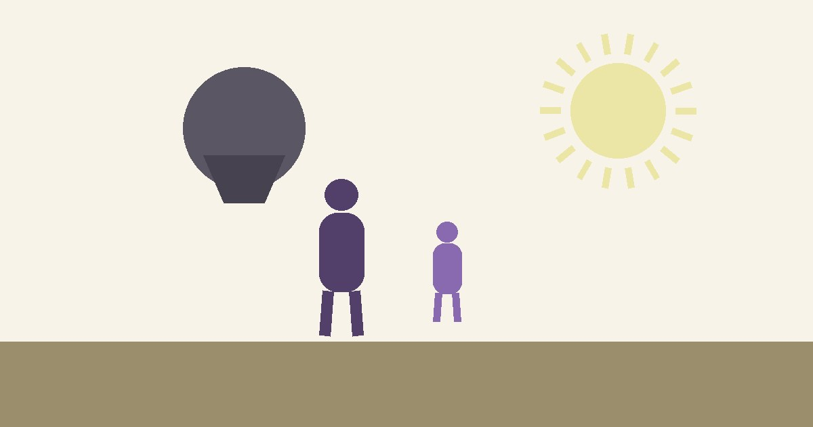

Si gritas en casa, no eres un mal papá: estás saturado
*Guía para padres · TDAH, conducta y culpa*

Son las 7 de la noche. Tu hijo no hizo la tarea, perdió los útiles, interrumpió tres veces y ya llevas dos horas intentando lo mismo. Y de repente estás gritando.
Después viene lo peor: la culpa. *No debería ser así. Otros papás sí pueden.*
Escúchame bien: gritar no significa que seas un mal papá ni una mala mamá. Significa que estás saturado. Y esto pasa mucho más de lo que crees: en una encuesta nacional con más de 8,000 padres, el 85% reconoció haber gritado o levantado la voz a sus hijos; uno de cada cinco, todos los días. Casi tres cuartas partes sienten culpa a diario por su forma de criar. No estás roto. Estás agotado.
Ahora, el TDAH. Es el trastorno del neurodesarrollo más detectado en la infancia: en México, uno de cada tres niños que llegan a consulta de salud mental lo hace por TDAH, y casi 8 de cada 10 niños con TDAH tienen además otra condición — ansiedad, problemas de conducta, dificultades de aprendizaje. El niño que no atiende, que pierde todo, que no termina nada, no lo hace por flojo ni por molestar: su cerebro funciona distinto, y en casa eso se siente como un terremoto diario.
Aquí está el ciclo que veo en consulta, una y otra vez:
- El niño no cumple (atención, impulsividad, funciones ejecutivas).
- El papá grita (cansado, frustrado, con culpa).
- El niño se cierra o escala (más conducta, más conflicto).
- El papá siente más culpa — y al día siguiente, menos paciencia.
La Gestalt no te va a dar "10 técnicas para controlar a tu hijo". Te invito a trabajar lo que pasa *antes* del grito:
- Detecta tu propia saturación. Antes de responder, pregúntate: ¿estoy enojado con mi hijo o con mi día? Nombrar de dónde viene el enojo baja su intensidad.
- Contacto antes que corrección. Un minuto de "escúchame: veo que te costó terminar" conecta más que diez minutos de regaños. El niño con TDAH escucha mejor cuando se siente visto, no vigilado.
- Pide perdón cuando gritas. Sí: pedir perdón no te quita autoridad. Le enseña a tu hijo que las relaciones se pueden reparar — que es, en el fondo, lo que todos queremos aprender.
Y a ti, papá o mamá: tu culpa es información, no sentencia. Nos dice que te importa, y que necesitas apoyo, no más exigencia.
Soy Oscar Robledo, psicólogo de orientación Gestalt. Atiendo en línea a niños y a sus familias — y sí, a los papás saturados también.
→ oscarrobledo.qtzl.cloud — agenda tu llamada de 15 minutos sin costo.
*Fuentes (resumen): National Parenting Pulse Survey, Australia (8,300 padres: 85% gritó, ~73% culpa diaria); CDC 2024 (TDAH 11.7% en 3–17 años, 78% con comorbilidad); Save the Children / ENSANUT México (TDAH, primera causa de consulta infantil); Stripling, 2021 (revisión Gestalt en niños/adolescentes).*